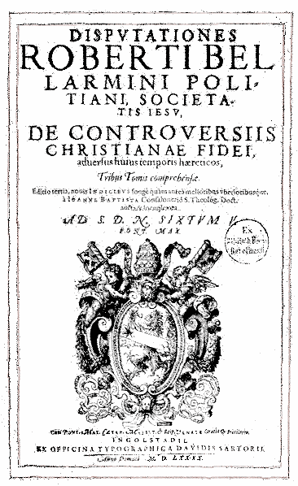
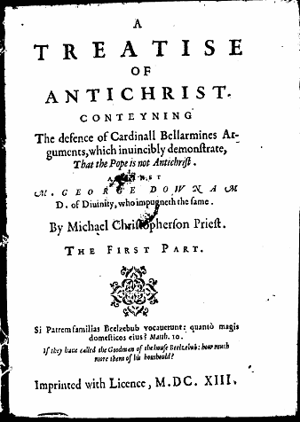
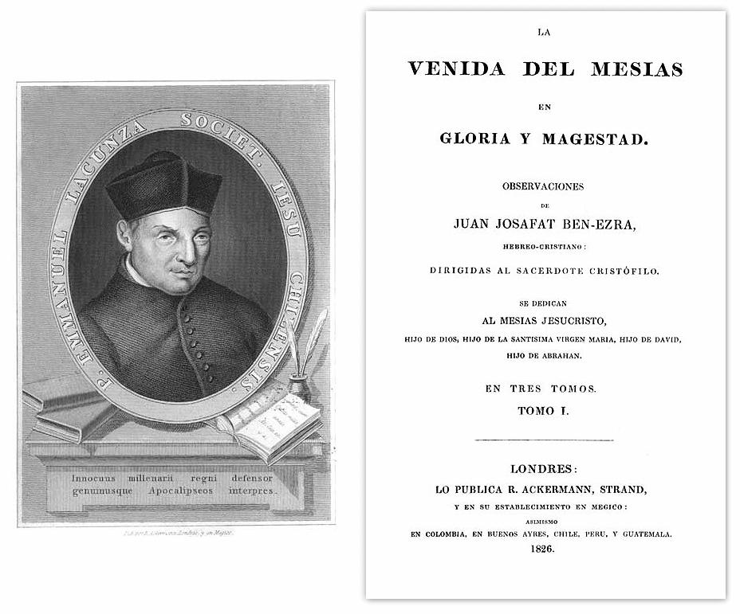
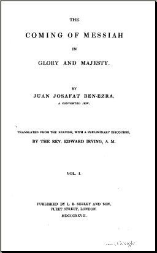
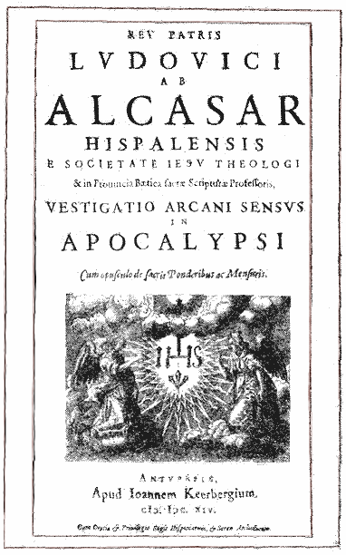
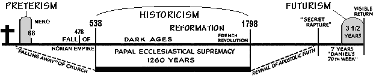

The Catholic Origins of Futurism and Preterism
With the advent of the printing press in the15th century, and the
resulting explosion of Bibles accessible in the common language from
Protestant sources, it became readily apparent to those who could now
study the prophecies of Daniel and Revelation in particular, that Bible
prophecy identified by symbols a persecuting apostate entity generally
known as antichrist. The following table shows the common elements from
several places in scripture that aid in identifying this antichrist
power:
|
Characteristics
|
The
Little Horn
(Daniel 7) |
The
Man of Sin
(2 Th 2:3) |
The
Sea Beast
(Rev. 13) |
Woman
on Beast
(Rev. 17-18) |
| Source |
grows
out of the head of the 10 horned fourth beast (Rome) |
owes his
rise to removal of a hindering power |
comes
from the "sea", meaning many people (densely populated Europe) |
arises
in a city with seven hills (Rome) and rules over many waters (peoples,
and multitudes, and nations, and tongues) |
| Time of Origin |
comes up
among 10 horns (the divided successors of the Pagan Roman Empire) |
revealed
only after the fall of the hindering Pagan Roman Empire |
receives
power, seat and authority from the Dragon (Satan working through Pagan
Rome) |
arises
among the ten horns (divisions of Rome) that will hate her |
Religio-political
Church-State
Power |
In Dan 2 Iron &
clay = Roman Church (Jer. 18)
Diverse
power, blasphemes God, exercises authority over the saints, changes
times and laws of the most high |
political
characteristics not mentioned, but demands and receives worship |
composite
of Daniel's beasts, which are kingdoms, and wear crowns, that demands
and receives worship |
the
woman is an apostate church - the beast is the power of the state,
representing a church-state union, hence this is a religio-political
power having a priest-king ruler |
Blasphemous
Presumption |
in this
horn were eyes like the eyes of man, and a mouth speaking great things
and words against the most high |
exalts
himself above God. |
has a
mouth speaking great things and blasphemies |
full of
names of blasphemy
|
Time of
Dominance |
given
power over the saints for a time, times and a dividing of times. (1260
years) |
---
|
given
power forty and two months (1260 years) |
---
|
Warring
against
God's people |
made war
with the saints and prevailed against them |
---
|
makes
war with the saints and overcomes them |
this
woman (apostate church) is drunk with the blood of the saints - in her
was found the blood of prophets, and of saints, and of all that were
slain upon the earth.
|
| Great Power |
looks
more stout than his fellows |
has all
power, signs and lying wonders |
who is
able to make war with him? |
the
woman which thou sawest is that great city, which reigneth over the
kings of the earth. |
Demands
Divine Homage |
sets
himself over the saints, times, and laws of the most high |
sets
himself up as God, above all that is worshipped |
causes
multitudes to worship him |
this
woman is the apostate "mother" of harlot churches |
| End |
they
shall take away his dominion, to consume and to destroy it unto the end
(the second coming) |
the Lord
shall consume with the spirit of his mouth, and shall destroy with the
brightness of his coming: |
cast
into the lake of fire |
utterly
burned with fire
|
HISTORICISM
Now if we list and develop the above characteristics of
antichrist, the following becomes readily apparent:
1. It will rise to be a great power after the fall of the pagan
Roman empire (after 476 A.D.). See Early Church Fathers on Antichrist.
2. It will be a geographically small nation (a little horn).
3. It will rule over many people, nations, and tongues (it will be
universal).
4. It will be headquartered in the city of seven hills, Rome.
5. It will be a religio-political entity — a political city-state ruled
by a priest-king.
6. Its priest-king will make great and blasphemous claims.
7. It will claim authority over all kings.
8. It will claim its power to change the holy times and laws of God as
its mark of authority.
9. It will be an apostate church, that makes the nations drink her cup
of apostate doctrine.
10. It will be a "mother" church, with apostate daughters coming from
her.
11. It will be a persecuting power, killing the faithful saints of
Jesus Christ as heretics.
12. It will hold power and authority for 1260 years following the fall
of pagan Rome.
13. It will suffer a deadly wound that will end 1260 years of dominance
and persecution.
14. It will be revived after the deadly wound, and all the world will
wonder at it's revival.
In this the "Historical" interpretation, the antichrist was
clearly not merely a single individual, it was a system of
apostasy and persecution that would hold sway for over twelve
centuries:
... this apostasy was to have a head, and the coming
and character of that head are the great subject of Paul's Thessalonian
prophecy. A mistaken apprehension of his first letter to them had led the
Thessalonians to expect an immediate advent of Christ, and in his second
epistle Paul sets himself to correct this error by further instruction as to
the future. He tells them of something that was destined to precede the
return of Christ, a great apostasy, which would reach its climax in the
manifestation of a certain mighty power of evil; to which he attaches three
names, and of which he gives many particulars similar to those which Daniel
gave of his "little horn," such as the place and time of its origin, its
nature, sphere, character, conduct, and doom.
The names which the
apostle gives to this head of the apostasy in this prophecy are "that man of
sin, . . . the son of perdition," and "that wicked" or "lawless" one. These
expressions might convey to the mind of superficial readers the idea that
the predicted head of the apostasy would be an individual. Careful
study however shows this to be a false impression�an impression for which
there is no solid foundation in the passage. The expressions themselves,
when analysed grammatically, are seen to bear another signification quite as
well, if not better, and the context demands that they be understood in a
dynastic sense. "The man of sin," like "the man of God," has a broad,
extended meaning. When we read "that the man of God may be perfect,
throughly furnished unto all good works," we do not suppose it means any one
individual man, although it has the definite article. It indicates a whole
class of men of a certain character, succession of similar individuals. The
use of the definite article (analogous to the omission of the article in
Greek) does indeed limit an expression of the kind. A man of sin
could be only one, just as a king of England could mean only an individual.
The king, on the other hand, may include a whole dynasty. A king
has but the life of an individual, the king never dies. When, in speaking of
the Jewish tabernacle in Hebrews, Paul says that into the holiest of all
"went the high priest alone once every year," he includes the
entire succession of the high priests of Israel. That a singular expression
in a prophecy may find its fulfilment in a plurality of individuals is
perfectly clear from John's words, "As ye have heard that antichrist shall
come, even so now are there many antichrists" 1
Any doubt or ambiguity as to the true force of the expression "the man of
sin" is however removed by a consideration of the context of this passage.
Grammatically it may mean either an individual or a succession of similar
individuals. The context determines that it actually does mean the
latter. "The mystery of iniquity," in which this man of sin was latent, was
already working in Paul's day. The apostasy out of which he was to grow was
already in existence. "The mystery of iniquity doth already work." The man
of sin, on the other hand, was to continue till the second advent of Christ,
which is still future; for he is destroyed, as it is distinctly stated, only
by the brightness of the epiphany. The interval between Paul's days and
those of the still future advent was then to be filled by the great apostasy
in either its incipient working as a mystery of iniquity or its open
manifestation and great embodiment in the career of " the man of sin and son
of perdition." That career must consequently extend over more than a
thousand years, for the process of gestation is certainly briefer than the
duration of life. In this case of the man of sin the two together occupy
at least eighteen centuries. What proportion of the period can we
assign to the hidden, mysterious growth of this power, and what to its
wonderfully active and influential life? The life must of course occupy the
larger half, to say the least of it, and therefore, as no individual lives
on through ages, we may be sure that it is a succession of men, a dynasty of
rulers, that is intended by the ambiguous expression. We, students of the
nineteenth century, may be sure of this, though the students of early
centuries could not. — Romanism and the Reformation, From the
Standpoint of Prophecy, Henry Grattan Guinness, London, Hodder and
Stoughton, 27, Paternoster Row, 1887,
pgs. 82-85.
The inevitable conclusion of those who studied these
prophesies in scripture, before and during the Protestant Reformation,
was that there was only one entity that fit all the above
characteristics: the papal dynasty of the Roman Catholic Church. Is it
any wonder that the Catholic Church was so violently opposed to the
scriptures being available for everyone to read for themselves? There
was such a stir created during the reformation that the  Fifth Lateran Council
(1512-17 A.D.) resorted to strictly forbidding anyone to
publish a book without prior censorship, and also prohibited anyone
from preaching on the subject of antichrist:
Fifth Lateran Council
(1512-17 A.D.) resorted to strictly forbidding anyone to
publish a book without prior censorship, and also prohibited anyone
from preaching on the subject of antichrist:
SESSION 10, 4 May 1515, On censorship of books:
... "some printers have the boldness to print and sell to the
public, in different parts of the world, books — some translated into
Latin from Greek, Hebrew, Arabic and Chaldean as well as some issued
directly in Latin or a vernacular language — containing errors opposed
to the faith as well as pernicious views contrary to the Christian
religion and to the reputation of prominent persons of rank. The
readers are not edified. Indeed, they lapse into very great errors not
only in the realm of faith but also in that of life and morals. This
has often given rise to various scandals, as experience has taught, and
there is daily the fear that even greater scandals are developing." ...
... "We therefore establish and ordain that henceforth, for all
future time, no one may dare to print or have printed any book or other
writing of whatever kind in Rome or in any other cities and dioceses,
without the book or writings having first been closely examined, at
Rome by our vicar and the master of the sacred palace, in other cities
and dioceses by the bishop or some other person who knows about the
printing of books and writings of this kind and who has been delegated
to this office by the bishop in question, and also by the inquisitor of
heresy for the city or diocese where the said printing is to take
place, and unless the books or writings have been approved by a warrant
signed in their own hand, which must be given, under pain of
excommunication, freely and without delay."
"In addition to the printed books being seized and
publicly burnt, payment of a hundred ducats to the fabric of the
basilica of the prince of the apostles in Rome, without hope of relief,
and suspension for a whole year from the possibility of engaging in
printing, there is to be imposed upon anyone presuming to act otherwise
the sentence of excommunication." ...
SESSION 11, 19 December 1516, On how to preach:
... "We command all who undertake this task of preaching, or
will later undertake it, to preach and expound the gospel truth and
holy scripture in accordance with the exposition, interpretation and
commentaries that the church or long use has approved and has accepted
for teaching until now, and will accept in the future, without any
addition contrary to its true meaning or in conflict with it. They are
always to insist on the meanings which are in harmony with the words of
sacred scripture and with the interpretations, properly and wisely
understood, of the doctors mentioned above. They are in no way to
presume to preach or declare a fixed time for future evils, the coming
of antichrist or the precise day of judgment; for Truth says, it is not
for us to know times or seasons which the Father has fixed by his own
authority. Let it be known that those who have hitherto dared to
declare such things are liars, and that because of them not a little
authority has been taken away from those who preach the truth." ...
But the Catholic Church eventually came to the conclusion that it
would not be able to ban or burn all the Bibles, heretical books, and
heretics that possessed or preached from them. This oppressive and
crude tactic merely confirmed their identification as the
harlot persecuting church of prophecy. A new and more subtle approach
was needed in order to effectively counter the application of
apocalyptic prophecy to the Catholic Church.
One major identifying characteristic the Catholic Church needed to
deal with was the time period of 1260 years that the antichrist power
was to rule, according to Protestantism's Historicist interpretation.
There simply is only one entity on earth that has ruled for
this length of time after the fall of pagan Rome, and that is the Roman
Catholic Church (See also
Time, Times, and Half a Time? and The
Red Dragon and Rome).
A new "interpretation" would have to be found that deflected
attention away from the twelve century papal rule of the middle ages.
This would fulfill the prophecy of Dan 7:25, that the little horn power
would think to change the prophetic set times of the most High, just
like king Nebuchadnezzar of Babylon thought to change the prophetic
vision of the statue man in Daniel chapter 2, by building an all gold
statue in chapter 3. The little horn, Mystery Babylon, would in like
manner, try to deny and obscure the meaning of prophecy.
|
FUTURISM
Francisco Ribera
(1537-1591) was a Jesuit doctor of theology, born in Spain, who began
writing a lengthy commentary in 1585 on the book of Revelation
(Apocalypse) titled In Sacrum Beati Ioannis Apostoli, &
Evangelistiae Apocalypsin Commentarij, and published it about the
year 1590. He died in 1591 at the age of fifty-four, so he was not able
to expand on his work or write any other commentaries on Revelation. In
order to remove the Catholic Church from consideration as the
antichrist power, Ribera proposed that the first few chapters of the
Apocalypse applied to ancient pagan Rome, and the rest he limited to a
yet future period of 3 1/2 literal years, immediately prior to the
second coming. During that time, the Roman Catholic Church would have
fallen away from the pope into apostasy. Then, he proposed, the
antichrist, a single individual, would:
- Persecute and blaspheme the saints of God.
- Rebuild the temple in Jerusalem.
- Abolish the Christian religion.
- Deny Jesus Christ.
- Be received by the Jews.
- Pretend to be God.
- Kill the two witnesses of God.
- Conquer the world.
|

|
So, according to Ribera, the 1260 days and 42 months
and 3 1/2 times of prophecy were not 1260 years, but a literal
3 1/2 years, and therefore none of the book of Revelation had
any application to the middle ages or the papacy, but to the future, to
a period immediately prior to the second coming, hence the name Futurism.
A 1591
edition, 1593
edition, and a
1603
edition of his commentary are now online.
|
|
|

|
Cardinal Robert Bellarmine,
one of the best known Jesuit apologists, published a work between 1581
and 1593 entitled Disputationum Roberti Bellarmini De controversiis
Christian fidei adversus hujus temporis h�reticos, (Polemic
Lectures Concerning the Disputed Points of the Christian Belief Against
the Heretics of This Time), in which he also denied the day =
year principle in prophecy and pushed the reign of antichrist into a
future period of 3 1/2 literal years. (See Froom, Prophetic
Faith, Vol. 2, pgs. 495 - 502).
Volume I (Book
3 - De Summo Pontifice), 1608 printing.
A 19th century printing:
Volume
I (Book
3 - De Summo Pontifice)
Volume
II
Volume
III
Volume
IV
Volume
IV Part II
|
Michael Walpole
Available Online:
A Treatise of Antichrist. Conteyning the defence of Cardinall
Bellarmines arguments, which inuincibly demonstrate, that the pope is
not Antichrist. Against George Downam by Michael Christopherson
priest ..., Volume 1 of 2 by the English Jesuit, Michael
Walpole (1570-1624?), 1613 edition. Christopherson is a pseudonym for
Walpole.
The third chapter, titled "Wherein it is shewed, that
Antichrist is not yet come", (pages 49-51) discusses the protestant
(Lutheran) Matthias
Flacius Illyricus (1520-1575) and his Catalogue of Witnesses to
the Truth who before our day cried out against the Pope (Catalogus
Testium Veritatis - Basel, 1556), his Magdeburg
Centuries (Ecclesiastica Historia, 1559 - 1574), an
ecclesiastical history of 13 volumes (1 volume per century) to 1298
A.D. which established from that history that the Bishop of Rome was
the Antichrist, and a 1260 year spiritual reign of the papal
Antichrist, proposed to be from 606 - 1866 A.D., with the Lord's
judgment commencing in 1866!
|

|

Manuel De Lacunza (1731–1801), a
Jesuit from Chile, wrote a manuscript in Spanish titled La Venida
del Mesias en Gloria y Magestad ("The Coming of the Messiah in
Glory and Majesty"), under the pen name of Juan Josafa [Rabbi] Ben-Ezra
about 1791. Lacunza wrote under an assumed Jewish name to obscure the
fact that he was a Catholic, in order to give his book better
acceptance in Protestantism, his intended audience. Also an advocate of
Futurism, Lacunza was deliberately attempting to take the pressure off
the papacy by proposing that the Antichrist was still off in the
future. His manuscript was published in London, Spain, Mexico and Paris
between 1811 and 1826.
Volume 1
Volume II
Volume III
La
Venida del Mesias en Gloria y Magestad online at the
National Library of Chile (in Spanish).
Edward Irving
(1792-1834), a Scottish Presbyterian and forerunner of the Pentecostal
and Charismatic movements, translated Lacunza's work from Spanish into
English in a book titled The Coming of Messiah in Glory and Majesty
with a Preliminary Discourse, published in London in 1827 by L.B.
Seeley & Sons, which included Irving's own lengthy preface. Here
are excerpts from Irving's translation:
Lacunza asserts that Antichrist would
appear near the end of time:
That there shall be an Antichrist; that he shall be revealed,
and publicly declared, towards the last times; and that he shall commit
in the world the greatest evils, making formal war against Christ, and
all that pertains to him; —these are three certain things, of which no
Christian can doubt. -- Vol. I, Part II, Phenomenon III, pg. 195.
Antichrist, Lacunza concludes, would not be just one man:
ACCORDING to all the signs given in the
Holy Scriptures, and others, not equivocal, offered to us by time,
which is wont to be the best interpreter of the prophecies, the
antichrist, or the contrachrist, with whom we stand threatened in the
times immediate upon the coming of the Lord, is nothing but a moral
body, composed of innumerable individuals, diverse in themselves, but
all morally united and animated with one common spirit, against the
Lord and against his Christ; -- Vol. I, Part II, Phenomenon III,
pg. 196.
As to the harlot woman riding the beast in Revelation 17, Lacunza
acknowledges it is indeed referring to Rome:
... the doctors do all agree, that the woman here spoken of is
the city of Rome, in other times the capital of the greatest empire in
the world, and now the capital and centre of unity of the true
Christian church. On this first point, which is not called in question,
there is no occasion to tarry. -- Vol. I, Part II, Phenomenon
III, pg. 240.
... it is not present Rome which is at all spoken of here, but
future Rome alone to which the prophecy hath its determinate
application. -- Vol. I, Part II, Phenomenon III, pg. 251.
Rome yes, Lacunza agrees, but not the Roman Catholic
Church of his day, which he calls the true church, rather he pushes
this prophecy in Revelation 17 off into the future:
Rome, not idolatrous but Christian, not the head of the Roman
empire but the head of Christendom, and centre of unity of the true
church of the living God, may very well, without ceasing from this
dignity, at some time or other incur the guilt, and before God be held
guilty of fornication with the kings of the earth, and amenable to all
its consequences. And in this there is not any inconsistency, however
much her defenders may shake the head. And this same Rome, in that same
state, may receive upon herself the horrible chastisement spoken of in
the prophecy; -- Vol. I, Part II, Phenomenon III, pg. 252.
This apostate Christian group termed Antichrist would be:
... slain and destroyed by Christ himself in the great day of
his coming in glory and majesty. -- Vol. I, Part II, Phenomenon
IV, pg. 292.
|

|
Edward Irving's
translation of Lacunza's
Coming of Messiah in Glory and Majesty
at Google Books
Volume
1, .pdf (28 Mb)
Volume
2, .pdf (19 Mb)

|
Margaret McDonald, a 15 year old
Scottish girl, and member of Edward Irving's congregation, had visions
in early 1830 that included a Secret Rapture of believers before the
appearance of the Antichrist. She informed Irving of her visions by
letter. Irving then attended the prophecy conferences that began in
Dublin Ireland in 1830 at Powerscourt Castle, where he promoted both
Futurism and a Secret Rapture.
Samuel Roffey Maitland (1792-1866),
scholar and librarian to the Archbishop of Canterbury, further promoted
and established Futurism in England after 1826, as a result of reading
the work of Manuel De Lacunza. He concluded that the 3 1/2 times, 42
months, and 1260 days of Daniel and Revelation were all intended to be
a literal 3 1/2 years, not 1260 years.
John Nelson Darby (1800–1882), a
Church of Ireland clergyman, later with the Plymouth Brethren, also
promoted Futurism and a secret rapture. Darby attended the series of
meetings on Bible Prophecy that began in 1830 at Powerscourt, Ireland,
and at these conferences Darby apparently learned about the secret
rapture as revealed by vision to Margaret McDonald, and promoted by
Edward Irving, and he soon visited Margaret MacDonald at her home in
Port Glasgow, Scotland. Darby later visited America several times
between 1859 and 1874, where his Futurist theology was readily accepted.
Samuel Prideaux Tregelles (1813-1875),
formerly with the Plymouth Brethren, he became Presbyterian, and
published
The Hope Of Christ's Second Coming in 1864, in which he gave
the following testimony on the origin of the secret rapture:
"I am not aware that there was any definite teaching that there
would be a secret rapture of the Church at a secret coming,
until this was given forth as an "utterance" in Mr. Irving’s Church,
from what was there received as being the voice of the Spirit. But
whether any one ever asserted such a thing or not, it was from that
supposed revelation that the modern doctrine and the modern phraseology
respecting it arose. It came not from Holy Scripture, but from that
which falsely pretended to be the Spirit of God, while not owning the
true doctrine of our Lord’s incarnation in the same flesh and blood as
His brethren, but without taint of sin." -- Footnote 1 for Chapter 9.
Note that the respected Presbyterian minister
Matthew Henry's Commentary (complete edition edited by George Burder and
John Hughes, published in 1811), does not mention
any secret rapture in
Revelation 4:1. See also The Truth
About the Rapture.
Cyrus Ingerson Scofield (1843-1921),
greatly influenced by the writings of J. N. Darby, incorporated
Futurism in the notes of his Scofield Reference Bible. First
published by Oxford University Press in 1909, one million copies were
printed by 1930. The Scofield Bible was instrumental in
firmly establishing the Jesuit inspired Futurist interpretation in the
Protestant Bible schools of the United States in the 20th century.
The Jesuit Inspired Futurist Lie
Spreads
To America's Protestant Seminaries
These seminaries and ministries have
wholly abandoned the historical Protestant and biblical teaching that
the Roman Catholic Church is the apostate church, the harlot of
Revelation, with the Antichrist papacy at its head, and instead serve
to screen the papal Antichrist power from being perceived by their
students or viewers. They are accurately described as false
prophets!
- Dallas Theological Seminary
(a nondenominational Protestant school): Lewis Sperry Chafer
(1871-1952), a student of Cyrus Scofield, founded Evangelical
Theological College (now DTS) in 1924, which is likely the most
influential seminary in the United States today. Futurism, and the
secret rapture (which they call the blessed hope), are covered in
articles 18-20 of the DTS Full Doctrinal
Statement.
Some of the more well known alumni and faculty of DTS:
- John Walvoord (Professor Emeritus of Systematic Theology,
President of Dallas Theological Seminary from 1952 to 1986, Chancellor
of DTS since 1986), author of The Rapture Question (1957), and
member of the revision committee for The New Scofield Reference
Bible.
- Chuck Swindoll (Insight
for Living), President of Dallas Theological Seminary since
July of 1994.
- Charles C. Ryrie (Professor Emeritus Dallas Theological
Seminary), author of The Ryrie Study Bible, which has
been characterized as the updated Scofield Reference Bible for
the end of the twentieth century.
- Hal Lindsey, (hallindsey.com
- hallindseyoracle.com)
author of The Rapture: Truth or Consequences (1983), perhaps
the best known prophecy author of the last 30 years. Sole credited
Bible authority for Trinity
Broadcasting's recent Futurist antichrist movie Omega Code.
- J. Vernon McGee (1904-1988), Through
the Bible Radio series.
- Kenneth N.
Taylor (former director of
Moody Press, founder of Tyndale
House Publishing), author of The Living Bible. Tyndale
House publishes the hugely popular Left Behind Futurist series
by Tim LaHaye and Jerry Jenkins.
- Thomas
Ice (Executive Director of the
Pre-trib Research Center), Th.M. from DTS, co-founder of Pre-trib
Research Center with Tim LaHaye.
- Renald Showers, Most High
God: A Commentary on the Book of Daniel.
- Moody Bible Institute
of Chicago: In 1890, C. I. Scofield began a Comprehensive
Bible Correspondence Course, later taken over about 1914 by the Moody
Bible Institute (Dwight. L. Moody, founder of the Moody Church, had converted
Scofield, and Scofield preached and presided at Moody's funeral in
1899).
- Moody Press
supplied Sunday School lessons to the Assembly of God churches about
1914, introducing Pentecostals to Futurism and the secret rapture
theory.
- The Ryrie Study Bible, by Charles C. Ryrie, a
graduate Dallas Theological Seminary, boasts 10,000+ study notes and is
listed among the best selling books published by Moody Press.
- Jerry B. Jenkins,
co-author of the Left Behind
series, is the former vice president for publishing of Moody Bible
Institute, and former editor of Moody Magazine. Currently he is
Moody Bible Institute's writer-at-large.
- Western Theological
Seminary (Reformed Church in
America).
- Alma Mater of Tim LaHaye,
founder of the Pre-trib Research Center, co-author of the Left Behind series of books,
by far the most popular series promoting Futurism and the secret
rapture, which has sold 20+ million copies. Published by Tyndale House, at least 12 titles
are planned for the series. The film version of the first book in the
series has been produced by prophecy authors Peter and Paul Lalonde of Cloud Ten Pictures.
Released first on video cassette, and then in theaters in early 2001,
people who have seen Left Behind say it is confusing, and lacks
a Gospel presentation of salvation through faith in Jesus Christ,
making it of little (if any) evangelistic value, much like TBN's Omega Code and Megiddo (Omega Code II).
- Tim LaHaye School
of Prophecy - opens in January 2002 on the campus of Liberty University
Lynchburg, V.A., Dr. Jerry Falwell - Chancellor. Tim LaHaye says he was
impressed by the prophecy conferences of Albury Park and Powerscourt
held in Britain in the 1820's and 1830's and this led directly to his
co-founding the
Pre-trib Research Center. Edward Irving and J. N. Darby attended,
and apparently greatly influenced, these 19th century British prophecy
conferences where the secret rapture and futurism gained in acceptance
among Protestant prophecy scholars.
Well known ministries teaching Futurism and the Secret Rapture:
The
Moment After - TMA Productions.
Two FBI agents investigate the reason for the sudden mysterious
disappearance of millions of people.
The
Gathering - DRC Productions.
Two unbelieving women and a believing husband have disturbing visions
of the impending tribulation and sudden rapture of Christians.
End
of the Harvest - Christiano Film Group.
A college student, who experiences strange dreams of a farmer
harvesting wheat, reluctantly defends end-time Bible prophecy when
another student fails to give the presentation to a group of die-hard
atheists in a philosophy club. Subtly promotes spiritualism
(communications from the dead).
- Jack Van Impe Ministries
- Author of The Jack Van Impe Prophecy Bible and a
verse-by-verse commentary on the book of Revelation entitled Revelation
Revealed. On his TV program, Jack claims that God Himself has shown
him the error of previous Bible interpreters and given him the
absolutely correct interpretation of the book of Revelation. Producer
of the following futurist-themed movies:
- Apocalypse I: Caught in the Eye of the Storm.
- Apocalypse II: Revelation.
- Apocalypse III: Tribulation.
- Apocalypse IV: Judgment.
- Jerry Falwell Ministries
- heavily promotes the Tim LaHaye School of Bible Prophecy,
which opened in January 2002 on the campus of Falwell's Liberty University.
- John Hagee Ministries
- Offers the John Hagee Prophecy Study Bible, billed as "the
only Prophecy Study Bible of its kind", with over 300 pages of Bible
Prophecy study notes and having unique Bible Prophecy charts. John
Hagee has strongly promoted the Left Behind books and movie
with hour long infomercial TV programs.
- The King is Coming,
World Prophetic Ministry, Colton, California, Ed Hindson President.
Founded by Dr. Howard C. Estep (1916-1986), author of The
Catching Away (1967). Committed to the literal interpretation of
the Bible. Dr. Dave Breese, former President of W.P.M. and Teacher on
"The King is Coming." referred to Scofield's margin notes when teaching
the Futurist interpretation of Daniel's 70 weeks on The King is Coming.
Contributed to the Tim LaHaye Study Bible, billed as "the most
complete study Bible ever!". Tim LaHaye has been guest speaker for a
series of programs on the "The King is Coming".
- Grant R. Jeffrey
(Prophecy Online)
- Hilton Sutton World
Ministries
- Zola Levitt - Zola
Levitt Ministries "holds to a strictly literal and inerrant Bible
interpretation, salvation through Christ alone, a soon pre-tribulation
Rapture of all believers and the establishment of a thousand-year
kingdom on Earth."
- John Ankerberg
(Ankerberg Theological Research
Institute), (Harbor
Lighthouse)
- Perry Stone
(Manna Fest), Founder and President of Voice
of Evangelism Ministries Inc.
- Chuck Missler (Koinonia House).
Questions
Continue: The Great Snatch?
- Dave Hunt (The Berean
Call) - author of A Woman Rides the Beast, remarkably
enough, teaches the secret rapture and future antichrist.
|
PRETERISM
Another counter-interpretation to the Historicism
held by Protestantism was proposed by the Spanish Jesuit Luis De
Alcazar (1554-1613), who also wrote a commentary called Investigation
of the Hidden Sense of the Apocalypse, which ran to some 900
pages. In it he proposed that it all of Revelation applied to
the era of pagan Rome and the first six centuries of Christianity.
According to Alcazar (or Alcasar):
- Revelation chapters 1-11 describes the rejection of the
Jews and the destruction of Jerusalem by the Romans.
- Revelation chapters 12 - 19 were the overthrow of Roman
paganism (the great harlot) and the conversion of the empire to the
church.
- Revelation 20 describe the final persecutions by
Antichrist, who is identified as Caesar Nero (54-68 A.D.), and judgment.
- Revelation 21 -22 describe the triumph of the New
Jerusalem, the Roman Catholic Church.
|

|
Again, Alcazar found no application of prophecy to the middle ages
or to the papacy. That his interpretation differed so greatly from that
put forth by Francisco Ribera or Cardinal Bellarmine, mattered little.
Catholicism, the supposedly divine and infallible interpreter of
scripture, was presenting two vastly different and quite incompatible
interpretations of prophecy in a desperate effort to counter the claims
of the reformers.
THE GREAT CATHOLIC
DIVERSION REVEALED
The intent of both Futurism and Preterism was to be diversionary,
to counter or offset the Protestant Historical interpretation, and
present alternatives, no matter how implausible they might be. The
result is evident from the following chart, which illustrates the three
schools of interpretation regarding antichrist:
|
THE REIGN OF ANTICHRIST

ANTICHRIST IS MOVED EITHER FORWARD OR
BACKWARD IN TIME
Ribera's Futurism Puts the Antichrist Into A
Future Three and One-half Literal Years.
Alcazar's Preterism Identifies the Antichrist as Nero.
Both of Them Put Antichrist Outside the Middle Ages and the Reformation
Period,
Identified by Protestant Historicists as Antichrist's Reign of 1260
Prophetic Years.
|
Now the truly amazing part of all this is that the
Futurist theory dominates Protestant teaching today. About all you hear
or read about today is the yet-to-appear antichrist, who will be
unveiled in the last 3 1/2 years of Daniel's 70th week, when he
declares himself to be God in a rebuilt temple in Jerusalem. That
scenario, as you can now see, is directly traceable back to the pen of
the Jesuit Francisco Ribera. Note what one Protestant writer had to say
over one hundred years ago:
Next we come to consider the
time of the rise of the Futurist system as we now have it, and
the occasion which led to it.
So great a hold did the conviction that the Papacy
was the Antichrist gain upon the minds of men, that Rome at last saw
she must bestir herself, and try, by putting forth other systems of
interpretation, to counteract the identification of the Papacy with the
Antichrist.
Accordingly, towards the close of the century of the
Reformation, two of her most learned doctors set themselves to the
task, each endeavouring by different means to accomplish the same end,
namely, that of diverting men's minds from perceiving the fulfilment of
the prophecies of the Antichrist in the Papal system. The Jesuit
Alcasar devoted himself to bring into prominence the Preterist
method of interpretation, which we have already briefly noticed, and
thus endeavoured to show that the prophecies of Antichrist were
fulfilled before the Popes ever ruled in Rome, and therefore could not
apply to the Papacy. On the other hand the Jesuit Ribera tried to set
aside the application of these prophecies to the Papal Power by
bringing out the Futurist system, which asserts that these
prophecies refer properly not to the career of the Papacy, but to that
of some future supernatural individual, who is yet to appear, and to
continue in power for three and a half years. Thus, as Alford says, the
Jesuit Ribera, about A.D. 1580, may be regarded
as the Founder of the Futurist system in modern times.
It is a matter for deep regret that those who hold
and advocate the Futurist system at the present day, Protestants as
they are for the most part, are thus really playing into the hands of
Rome, and helping to screen the Papacy from detection as the
Antichrist. It has been well said that "Futurism tends to obliterate
the brand put by the Holy Spirit upon Popery." More especially is this
to be deplored at a time when the Papal Antichrist seems to be making
an expiring effort to regain his former hold on men's minds. Now once
again, as at the Reformation, it is especially necessary that his true
character should be recognized, by all who would be faithful to "the
testimony of Jesus."
From Daniel and the Revelation: The Chart of
Prophecy and Our Place In It, A Study of the Historical and Futurist
Interpretation, by Joseph Tanner, published in London by Hodder
and Stoughton, 1898, pages 16,17.
In what could only be described as a stunning
reversal, Protestants have over time actually become the papacy's
greatest ally by spreading its Jesuit spawned propaganda. What irony
that Protestants, who originally broke away from what they clearly
recognized to be the harlot antichrist led church of prophecy, now
champion the Futurist interpretation from high profile global
ministries. Futurism has without doubt, been successful beyond the
wildest dreams of its Jesuit authors. The same can be said for the
Preterist interpretation of Luis De Alcazar, although to a lesser
degree.
What Does The Word VATICAN Mean?
Papal
Claims To Authority
The Red Dragon and Rome
Daniel's
70th week
Left Behind by the
Jesuits
The above article is based primarily
on information obtained from The
PROPHETIC FAITH OF OUR FATHERS, The Historical Development of
Prophetic Interpretation, by Le Roy Edwin Froom, Volume II,
Pre-Reformation and Reformation Restoration, and Second Departure,
published by the Review and Herald Publishing Association, Washington
D.C., Copyright 1948, Chapters 21-23 in particular.

{kind=link}
{kind=link}
{kind=link}
{kind=link}
{kind=link}
{kind=link}